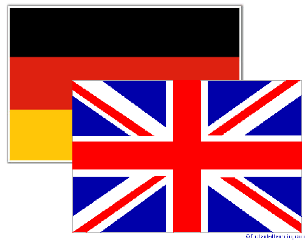

This is a role playing game where you take on the role of the leader of the Soviet Union. Your choices will affect the future of your country. The year is 1922. There are 8 possible endings, and over 20 possible plot paths. Good luck!
Your name is Joseph Stalin. It is September 1922. After a struggle for power against Leon Trotsky, you are now in control of the country. However, you have to make an important decision. Should Russia be made a socialist state, like before, or should it be made capitalist, following the success of the USA? It is your decision.
You have chosen to lead the country with communism. In the next year you rid the government of your competitors, especially Leon Trotsky. You are confident that you will lead the country well. It is now 1927. However, the New Economic Policy is clearly becoming a problem. Greedy peasants are hoarding supplies to drive up prices. Bring a communist, you have only once choice: to end the New Economic Policy.
You have now discarded the New Economic Policy. In its place you have collective farms. In the next few years, various opposes rise up against you. You deal with them quickly and harshly. Your secret police make a number of arrests, and thousands of people are sent to the Gulag labor camps. However, Russia is behind many countries in technology. There is a plan to fix this by the use of five-year-plans. These will quickly boost your country’s economy, but at a cost. Quality of life will be drastically reduced during this time. Do you accept or decline the Five year plans?
You have accepted the five-year-plans. For the next five years, huge advancements are made in heavy industry, communications, and transportation. You are still slightly behind Germany in technology. However, because of lack of attention to consumer goods, quality of life in your country deteriorates. People are unhappy. You are advised to develop upon consumer goods, but doing so will affect your industrial progress. What plan do you choose?
You have rejected the five-year-plans, and continue to rule with a collective economy. Your nation is far behind Germany and the USA in technology. In 1935, a series of droughts hits Russia and the country is in a state of famine. Your advisors suggest that you readopt the New Economic Policy, as your current methods of collective farming are clearly not working. Do you accept this?
You readopt the New Economic Policy. Russia is now a mixed economy. Slowly, standards of living improve, while technology is still lagging behind and not developing as fast as it could be. It is 1939. Germany offers to side with you in World War 2. However, your industries are still well behind that of other countries. You are afraid that more powerful countries will destroy you in the war. Do you accept this offer?

You insist on socialism and completely reject the re-adoption of the New Economic Policy. You continue with collective farming. Famine continues, and millions die. Two years later, peasants revolt. In 1938, a group of Ukrainian farmers manage to take over the government. You are quickly captured and executed under the new government.
The end.
You join forces with Nazi Germany in World War 2. However, your technology is not very advanced compared to those of other countries. In the course of the war, Germany is slowly pushed back. In 1944, you and Germany lose the war. As a result, your country is divided into many smaller fragments.
The end.
You refuse to join forces with Nazi Germany. In the course of the war, the Germans are slowly pushed back. In 1944, Germany loses the war. Being behind in technology and neutral, you do not play a major part in this war. You are not considered a threat to the world, but at least you do not suffer major losses during the war.
You choose to differ from Lenin’s state and start developing Russia to be a capitalist state. Although slowly at first, various industries grow in your country. Quality of life slowly but steadily increases. You expand upon the New Economic Policy started by Lenin. However, crops fail in the summer of 1929. Your country enters a Great Depression, along with much of the world, including the Americas. By now you are starting to doubt the effectiveness of capitalism. You have the option to continue with capitalism, or return to socialism.
Despite the depression, you continue with capitalism. You end up with a large amount of debt. However, around the late 1930’s your country quickly rises out of the depression. Now your nation boasts one of the highest qualities of lives in the world. Your industries are comparable to those of the Americas. In 1939, war breaks out, and Britain offers to side with you in the war. Do you accept?
After less than a decade of capitalism, you return to a mostly socialist mixed economy. It is 1931, and your country is still suffering a famine and in an economic depression. Attempts to improve the situation by collectivization merely worsen the situation. Being still a mixed economy, heavy taxes discourage innovation. Being an indecisive leader, you lose the election of 1936. You are no longer a leader.
The end.
You side with the Allies in World War 2. In the course of the war, Germany is slowly pushed back. With the combined industries of Russia and the USA, the allies win the war in 1944, with the capture of Berlin and Japan’s surrender.
You try to remain a neutral country in World War 2. However in 1941 Germany invades you. The Allies joins you to hold off the German invasion. With your advancements in technology, you are able to resist the Germans. The Germans are defeated in 1944.
You choose to develop consumer goods instead of industry. As a result, the standard of living in your country improves. In 1939, war breaks out. Germany offers to join forces with you in the war. Your industries are comparable to Germany’s, but still behind those of the Americas. Do you accept this offer?
You keep developing in the industries. Soon you exceed the USA in the industries, titlehough your standards of living are extremely low due to the continued lack of attention to the consumer industry. You develop nuclear weaponry in 1940, just after war breaks out. You must side either with the Allies or with the Axis.
You side with the allies. Your industries and weaponry are the most advanced in the world. Just two years after the war starts, you drop two atom bombs in Japan, effectively ending the war in 1941. Not long after the war, a tension builds up between Russia, a socialist country, and the USA, a capitalist country. Both countries develop weapons technology at a very fast rate, and you stockpile a mass of 30,000 nuclear weapons, with the option to launch them all at once and destroy America. Do you do this?
You side with the Axis powers in World War 2. Having the most advanced weaponry and technology in the world, you drop atom bombs in the Canadian cities of Calgary and Edmonton, killing millions. The Allied powers promptly surrender. The United States and Canada is divided into several smaller countries, some under Japanese, and others under Soviet rule. Much of the world is now socialist.
The end.
It is now 1950, and the world is recovering from World War 2. In the next period, your country improves quickly in quality of life. Being a democracy and capitalist, you maintain good relations with the United States and the rest of the world. The world enjoys a long period of peace and cooperation.
The end.
After the war, Russia continues to have a relatively centrally-planned economy. In a few decades, it would have caught up with the rest of the world in technology. But you pass away long before then.
The end.
You launch your massive stockpiles of nuclear weaponry. In response, the United States launch their equally large stockpile of nuclear warheads at you. Mutually assured destruction ensues. Billions of people in the world die from the nuclear radioactive fallout. For the next few centuries, humanity will suffer. The radioactive effects will last for millions of years. You have destroyed the human race.
The end.
You withhold your nuclear weaponry, knowing that launching them will cause the destruction of the planet. Gradually, the tension between you and the United States dies down. Decades of peace and cooperation follow, titlehough you die of natural causes a few years later.